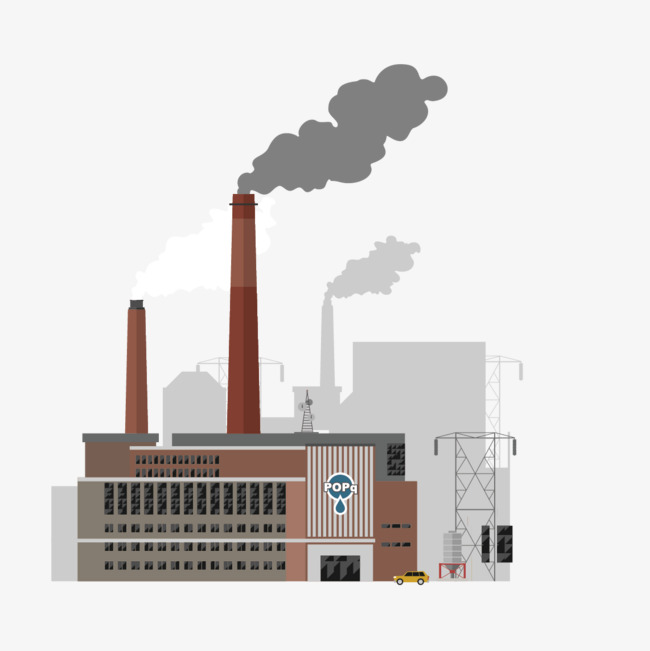

Industry and Energy
AP Human Geography Study Guide
HDI
- created by the UN to measure the level of development of every country
- it's been around since 1990
- highest HDI possible is 1.0
- based on three factors
- standard of living
- access to knowledge
- long and healthy life
The UN has divided the world into nine regions, each with its own overall HDI, here they are in order from highest to lowest HDI:
- North America
- Europe
- Latin America
- East Asia
- Southwest asia and North Africa
- Southeast Asia
- Central Asia
- South Asia
- Sub-Saharan Africa
Standard of living
- GNI = gross national income = the value of the output of goods and services provided in a country in one year (including money that leaves and enters a country)
- GNI per capita = GNI divided by the total population
- GNI is not a perfect way to measure a country's standard of living because outliers can greatly sway the mean contribution
Jobs can be defined as being in the:
- primary sector
- secondary sector
- tertiary sector
- cottage industry is home based manufacturing
Workers in developed countries are more productive than those in developing countries because:
- they have access to better machines, tools and equipment
- they receive better, more specialized educations with enable them to get higher paying jobs
Access to knowledge
Indicators to measure access to knowledge:
- years of schooling for adults = time 25 year olds have spent in school
- years of schooling for today's youth = expected time 5 year olds will spend in school
- The UN considers years of schooling to be the most critical measure of the ability of an individual to gain access to knowledge
- pupil/teacher ratio = number of enrolled students divided by the number of teachers
- literacy rate = percentage of a population who can read and write
Health and longevity
- life expectancy = average number of years a newborn infant can expect to live at current mortality levels
- worldwide average is 71 years
- 80 years in developed countries
- 57 years in Sub-Saharan Africa
People in developed coutnries are healthier because:
- more resources to cure the sick
- wealth to protect those unable to work
- public assistance for
- sick
- poor
- disabled
- orphans
- veterans of war
- widows
- unemployed
- single parents
- better healthcare and welfare
- HOWEVER: longer life exoectancy leads to an older population and greater strain on governments and working citizens to support the dependent
Trends in HDI factors since 1980:
- HDI: the gap between developed and developing coubtries is narrowing, the HDI is increasing rapidly in developing regions
- GNI per capita: increasing more rapidly in developed in developed countries <- problem because of increasing inequality
- Education: around the same increase in both
- Life expectancy: around the same increase in both
Malala Yousafzai:
- shot in the head in 2012 when she was trying to go to school
- speaks for those without voice
- wants wants education for every child
- mentions child labor in India and the destruction of school in Nigeria
Equality
Gender inequality index (GII):
- Reproductive health:
- Maternal mortality rates (MMR):
- In developed countries, 16/100K births
- In developing countries, 171/100K births
- Adolescent fertility rate
- Lower birth rates lead to better health
- Female empowerment
- Parliamentary seats held by women
- Enrollment in higher education
- Labor force participation (women divided by men)
- The highest GIIs are in developing countries (Sub-Saharn Africa, South Asia, Central Asia, Southwest Asia, North Africa)
- Empowerment is the ability of women to achieve improvements in their own status/ achieve economic and political power
- Percentage of seats held by women in the national legislature
- North America, Western Europe, Northern Europe, South Africa, Australia, and Southwest America have the highest percentage of women in their national legislatures (above 20%)
- The US has 10-19%
- Percentage of women who have compleeted some secondary school
- Female labor force participation rate is the percentage of women holding full-time jobs outside the home (worldwide average is 51%)
Economic development
- Self-sufficiency model: closed off from trade
- Barriers limit the import of goods
- Fledgling businesses become isolated from competition
- Reducing poverty takes precedence
- International trade approach
- Open to foreign investment and international markets
- Arabian countries, South Korea, Singapore, Taiwan
- Since India dismantled its collection of barriers to international trade, its GNI per capita has increased and it has produced higher quality goods
World Trade Organization (WTO)
- Formed by countries that conduct the majority of international trade (97% of it)
- Seeks to reduce barriers to international trade
- Seeks to protect intellectual property especially in the age of the Internet
- Critics:
- Progressives claim that the WTO is antidemocratic as decisions made in secret promote the interests of large corporations rather than the poor
- Conservatives claim that WTO compromises power and sovereignty of individual countries because it [the WTO] can order changes and laws that they consider unfair trading practices
- Other global banks/funds
- World Bank(IBRD, IDA)
- International Monetary Fund (IMF)
Economic downturns
- 1: stimulus strategy - governments spend more money - ex US 2008
- 2: austerity strategy - governments reduce taxes so people spend more
- Foreign direct investment (FDI) is an investment made by a foreign company in the economy of another country
- Microfinance is a provision of small loans and other financial services to individuals and small businesses in developing countries
- Fair trade is international trade that provides greater equality to workers, small businesses, and consumers
- Fair trade for workers: child labor laws outlawed, unions
- Fair trade for consumers: people involved run the business, democratically governed by a member elected board rather than a corporate owner
Industrial Areas
- Europe
- UK: steel and textile industries during the 19th century, nowadays, international investment through high tech industries
- Mid-Rhine: high value goods, centrally located (luxury cars, etc)
- Rhine-Ruhr: iron and steel manufacturing, Europe's largest port
- Po Basin:textile center, lower wages, hydroelectric power from the Alps
- Northeatern Spain: fastest growing manufactirer in Europe, textile and motor vehicle production
- Moscow: Russia's oldest industrial region, centerred around capital city
- St.Petersburg: Russia's 2nd largest city, ship-building and other novel industries
- Urals: most varied collection fo materilals, attracted iron/steel/chemicsl machines/metal fabricating factories
- North America
- New England: cotton textile in the 19th century, imported from wealthy states, products were shipped to Europe
- Mohawk Valley: inexpensive electricity generated at Niagra Falls
- Western Great Lakes: transportation network, steel production
- Southern Ontario: Canada's most important industrial area (access to Canadian and American markets)
- Middle Atlantic: largest US market, industries that rely on proximity to consumers (bulk-gaining industries)
- Pittsburgh - Lake Erie: leading steel-producing area during the 19th century, proximity to Appalachian coal and foreign trade
- South California: nation's largest area of clothing and textile production, 2nde furniture producer, food processing center
- East Asia
- Japan: industrial power since the 1950s and 60s, now, high quality electronic production and development
- South Korea: focused on export-oriented manufacters
- China: leading manufacturer of many products, low cost labor, largest market for consumer products
- Consumer goods are everyday products that people in a country buy
Industrial Revolution
- A series of improvements in industrial technology that transformed the process of manufacturing goods
- New England and SCotland in the second half of the 18th century
- Europe and North America in the 19th century
- Other in the 20th century
Economic strategies
- Bulk-gaining industry: an industry in which in input weighs more than the final product
- Bulk-reducing industry: the opposite
- Situation factors: involve transporting materials to and from a factory, a firm chooses a location that minimizes the cost of transporting (near materials for bulk-reducing, near market for bulk-gaining)
- Site factors: result from the unique characteristics of a location (land, labor, capital)
- Single-market manufacturers: have one or two main customers (choose to be close to these customers)
- Break-of-bulk point: location where transfer among transportation modes is possible
- Contemporay factories opeate most efficiently when laid out on one stoy buildings in sububan or rual aeas
Modes of transportation
- trucks: short distance, cheap, quick
- trains: long distance, no rest stops
- planes: expensive, fast, light-weight shipment, high value items
- boats: water travel, very long distance, low cost, slow
Random
- labor intensive: wages and other compensation constitute a high percentage of expenses
- high wage: measured in dollars or othe curencies as opposed to a pecentage